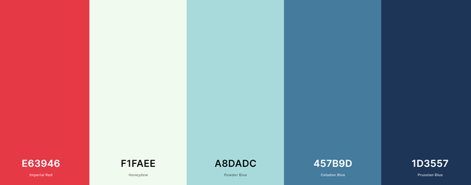

The Spot for SE Idaho | Color-Scheme
Home
Target-Audience
Color-Scheme
Typography
Color Scheme
Primary Color: #457B9D
Secondary Colors: #F1FAEE, #E63946, #A8DADC, #1D3557

Header and Footer: #457B9D
Navigation: #1D3557 , #A8DADC
Background: #F1FAEE
Alternate color as needed: #E63946